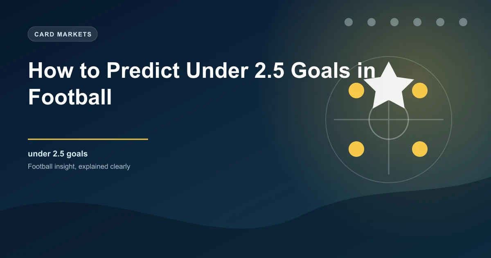

While most bettors chase goals, there is significant value in finding matches that produce few of them. The Under 2.5 goals market is one of the most commonly landed outcomes in football. Across Europe's top five leagues, roughly 50% to 55% of matches finish with Under 2.5 goals. That means the market hits more often than not, and understanding why helps you find consistent value.
Predicting low-scoring matches is a different discipline from predicting high-scoring ones. It requires you to identify defensive strength, tactical discipline, and the contextual factors that suppress goal output. This guide teaches you how to do exactly that.
The foundation of Under 2.5 prediction is identifying teams that defend well. A single strong defence can suppress goals even against the best attacks. When two strong defences meet, Under 2.5 becomes highly probable.
Start with goals conceded per game. Teams conceding fewer than 1.0 goals per game are prime Under 2.5 candidates. But the raw number only tells part of the story. You need to understand how and why a team concedes so few goals.
Key defensive metrics to evaluate:
A team that concedes 0.7 goals per game, allows just 2.5 shots on target per match, and keeps a clean sheet in 50% of their games is a defensive powerhouse. Any match involving this team has a strong Under 2.5 profile.
Some managers build their entire philosophy around preventing goals. These tactical approaches are goldmines for Under 2.5 bettors.
A low block involves positioning the defensive line deep, typically near or inside the penalty area. The team concedes territory and possession but denies space behind the defence and in the box. Teams using a low block are extremely difficult to break down because there is almost no space for attackers to exploit. Matches involving low-block teams frequently produce Under 2.5 results because opponents struggle to create clear chances despite dominating possession.
The ultimate defensive tactic involves packing the penalty area with players and defending in numbers. Teams that park the bus typically have lower quality than their opponents and use this approach to earn draws or narrow defeats. These matches almost always produce Under 2.5 goals because the defending team creates almost nothing and makes it extremely difficult for the opponent to score.
Some teams sit deep but look to score through fast, direct counter-attacks. While this approach can produce goals, it often leads to low-scoring games because the team creates few chances but converts them at a high rate. A match between two pragmatic counter-attacking teams often produces Under 2.5 results because neither team commits enough bodies forward to create sustained pressure.
Teams that dominate possession but avoid risky passes can also suppress goals. By keeping the ball without penetrating, they limit the opponent's opportunities while not creating many themselves. This slow, methodical approach produces Under 2.5 results because the game lacks the chaos and transitions that typically generate goals.
Weather is an underrated factor in goals prediction. Certain conditions suppress scoring significantly, and smart bettors use weather forecasts as part of their Under 2.5 analysis.
Heavy rain affects every aspect of the game. The pitch becomes slippery, making accurate passing difficult. Shots from distance skid off the surface unpredictably. Goalkeepers struggle with wet balls. Crosses become harder to control. The net result is fewer quality chances and fewer goals. Matches played in heavy downpours consistently produce lower scoring than dry conditions would suggest.
Wind disrupts long passes, goal kicks, clearances, and crosses. Teams that rely on direct play are particularly affected. The unpredictable nature of wind-blown balls leads to mistakes, but these mistakes tend to result in harmless clearances rather than goals. Strong winds of 20mph or more are associated with lower scoring matches.
Temperatures above 30 degrees Celsius slow the game dramatically. Players conserve energy, press less intensely, and produce fewer sprints. The reduced intensity leads to fewer attacking transitions, fewer chances, and fewer goals. Hot-weather matches in summer leagues and early-season fixtures in warm climates are strong Under 2.5 candidates.
While extreme cold can make the ball harder and the surface faster, moderately cold weather tends to produce tighter matches. Players are less inclined to take risks, the ball does not travel as quickly on heavy, frost-affected surfaces, and matches become more attritional.
The context of a match heavily influences whether it produces goals or not. Understanding what is at stake helps you predict the tactical approach and intensity level.
Teams fighting relegation or pushing for a title often play cautiously in important matches. A team needing a draw to avoid relegation will defend deep and avoid risks. This defensive mindset produces Under 2.5 results. However, a team that must win might push forward and create a more open game. Evaluate the specific situation rather than assuming all high-stakes matches are low-scoring.
End-of-season matches between teams with nothing to play for are unpredictable. Some become high-scoring as teams play with freedom. Others become low-scoring because motivation is low and squad rotation is heavy. Check whether either team has key players rested or injured before committing to an Under 2.5 pick in dead rubbers.
First legs of cup ties, especially in European competition, often produce Under 2.5 results. Teams are cautious, unwilling to concede an away goal, and willing to take a 0-0 or 1-0 result into the second leg. This tactical conservatism makes first-leg cup matches strong Under 2.5 candidates.
The referee appointment can influence whether a match produces goals. Some referees allow the game to flow, which can lead to more attacking play and goals. Others stop the game frequently, which disrupts rhythm and reduces goal-scoring opportunities.
Look at these referee statistics:
A match with a referee who averages 25+ fouls per game and 5+ yellow cards tends to produce fewer goals because the constant stoppages prevent sustained attacking pressure. Players become more careful to avoid bookings, reducing the risk-taking that creates goal-scoring opportunities.
Football follows seasonal patterns that affect goal output. Understanding these patterns gives you an edge in identifying Under 2.5 matches.
December and January fixtures in European leagues are notoriously tight. Fixture congestion, cold weather, heavy pitches, and tired legs all contribute to lower scoring. The packed schedule means teams rotate heavily and play conservatively to avoid injuries. Under 2.5 rates typically spike during this period.
Matches immediately after international breaks often produce Under 2.5 results. Key players return tired, team cohesion is disrupted, and managers use these games to ease players back into rhythm. The disruption to normal training and preparation affects attacking play more than defensive organisation, leading to fewer goals.
The final weeks of the season see mixed patterns. Some leagues produce more goals as teams push for promotion or avoid relegation. Others see a decline in goals as tiredness sets in and motivation wanes for mid-table teams. Focus on the specific match context rather than applying a blanket rule.
Expected Goals data is just as valuable for Under 2.5 prediction as it is for Over 2.5. The key metrics to focus on are:
When both teams have low xG For and low xG Against numbers, the combined match xG will typically fall below 2.5. These matches are ideal Under 2.5 candidates because the underlying data suggests neither team creates enough quality chances to score multiple goals.
Different leagues produce different average goal totals. Some leagues are naturally low-scoring due to tactical approaches, playing surfaces, or cultural attitudes towards football. Knowing which leagues tend toward Under 2.5 helps you narrow your search.
Leagues with consistently lower goal averages include:
The most reliable Under 2.5 picks come from matches between two defensively solid teams with little attacking threat. Look for teams in the bottom half of the scoring charts that also have strong defensive records. These matches rarely produce goals because neither team has the quality or the intent to break the other down. Avoid Under 2.5 picks in matches involving high-pressing teams or open, attacking sides — even if one team is defensively strong, the other's attacking intent can push the total above 2.5.
Under 2.5 goals is a market that rewards discipline and analysis. The majority of football matches finish with Under 2.5 goals, which means the odds often offer value if you can identify the right candidates. The key is finding matches where defensive strength, tactical conservatism, and contextual factors combine to suppress goal output.
Use the checklist in this guide to systematically evaluate matches. Focus on defensive metrics, tactical approaches, weather, match context, and referee tendencies. With practice, you will develop an eye for Under 2.5 candidates that others overlook, giving you a genuine edge in this market.
Check our free daily football predictions to apply these strategies.
Generate optimized accumulator combinations from today's AI-powered predictions. Set your target odds and get instant ticket suggestions.
Free Ticket Builder →